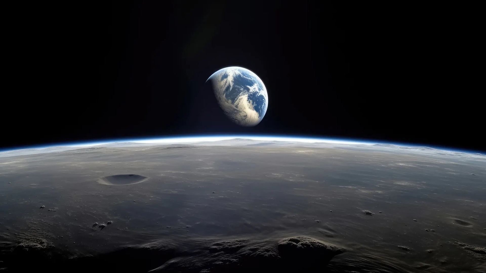

Teknik Elektro | Politeknik Negeri Batam

Terlibat dalam proyek berbasis teknologi dan riset yang relevan dengan industri modern.
Teknik elektro, mekatronika, dan inovasi AIoT untuk solusi nyata.
Selalu siap mengeksplorasi teknologi baru dan berkembang dengan pendekatan praktis.
Skills
Experience
Mahasiswa aktif dalam proyek berbasis industri dengan fokus pada mesin kartesian dan sistem kontrol konvensional.
Berperan dalam perancangan mekanikal perangkat AIoT untuk membantu penyandang tunanetra dalam mobilitas dan literasi.
Terus belajar tentang inovasi teknologi, sistem otomasi, serta penerapan solusi yang bermanfaat bagi masyarakat.